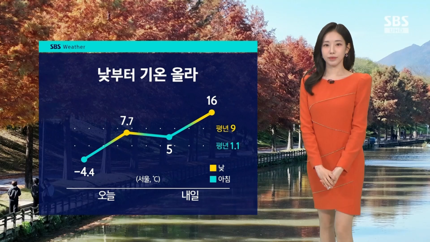
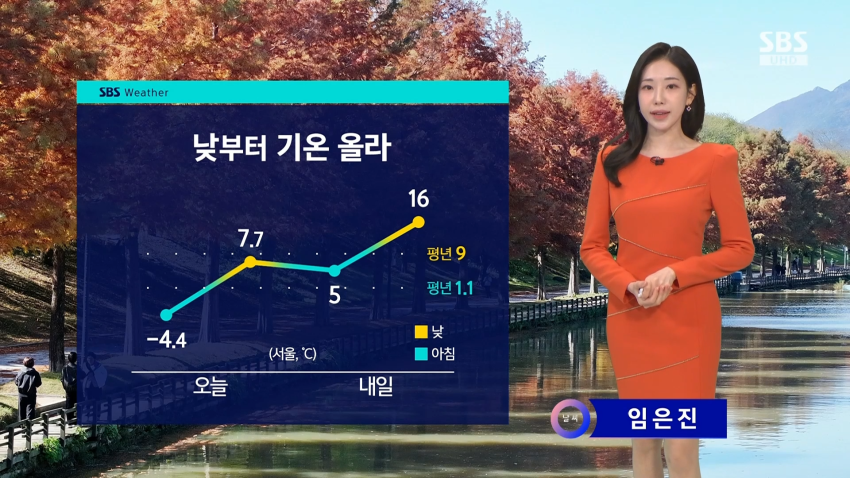
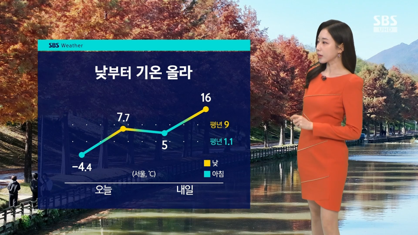
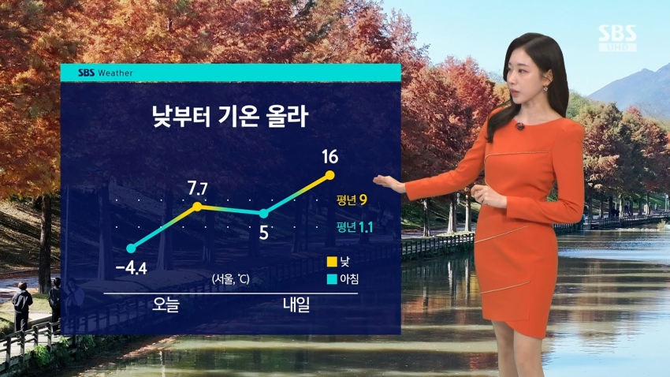
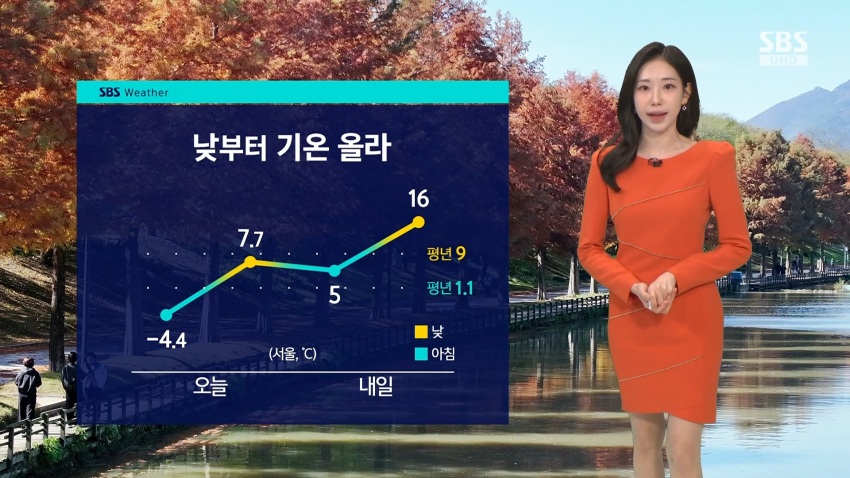
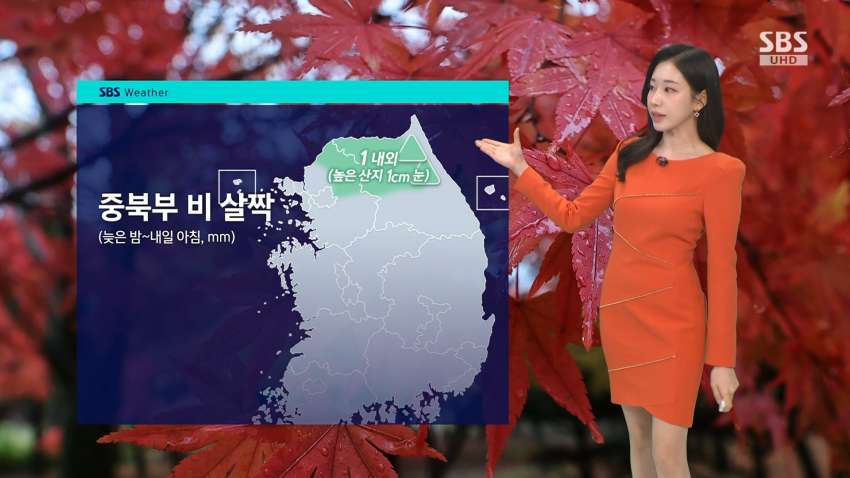
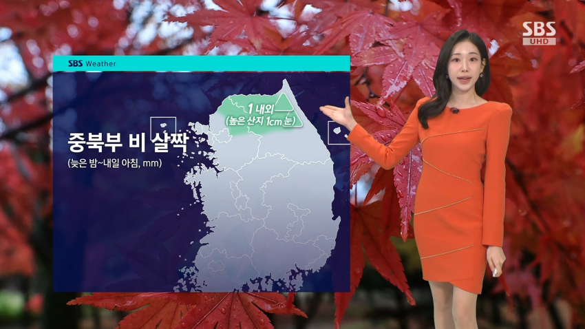
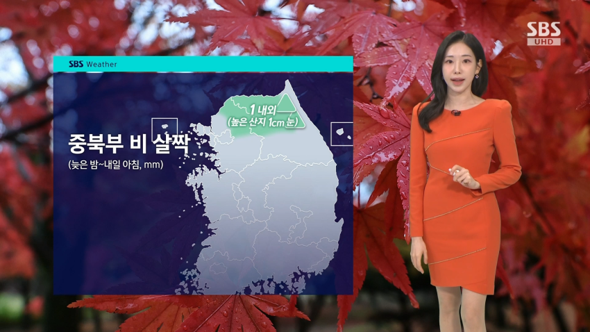
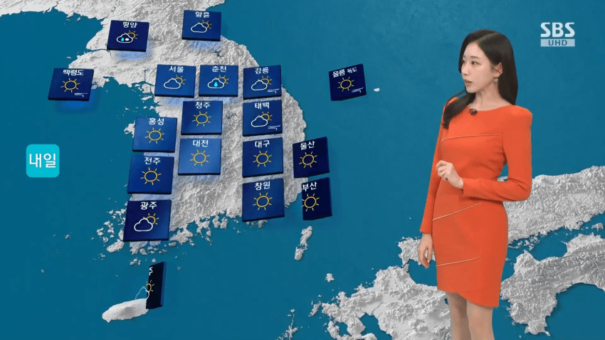
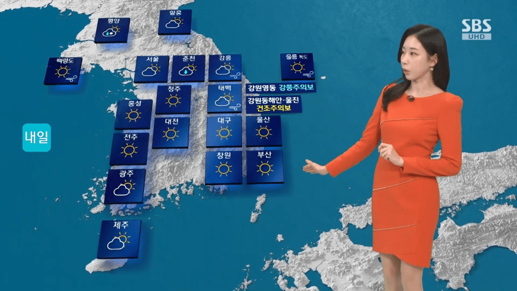
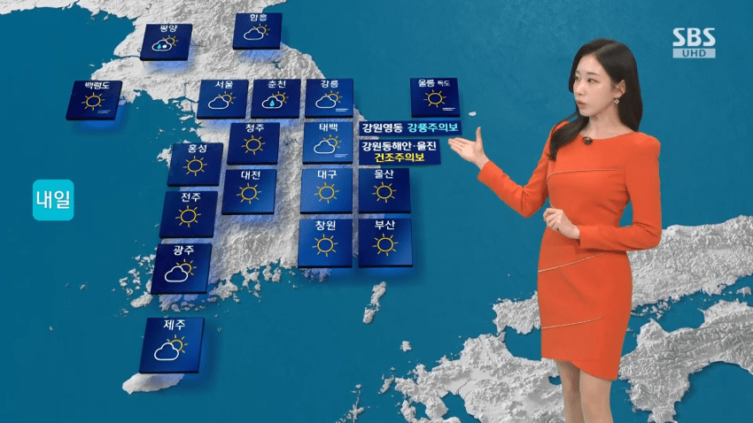
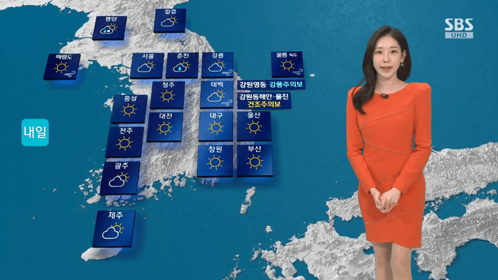
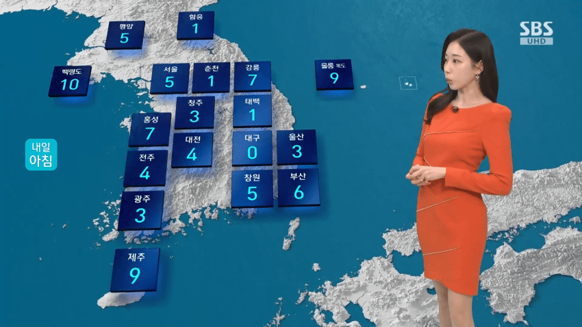
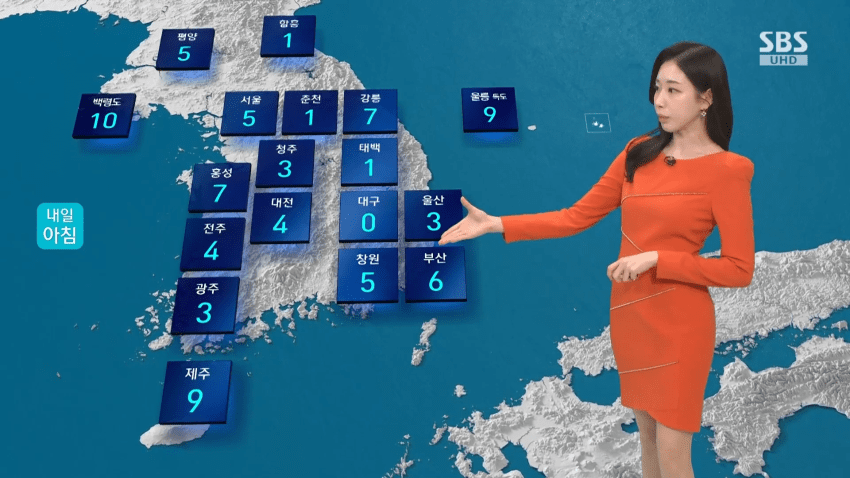
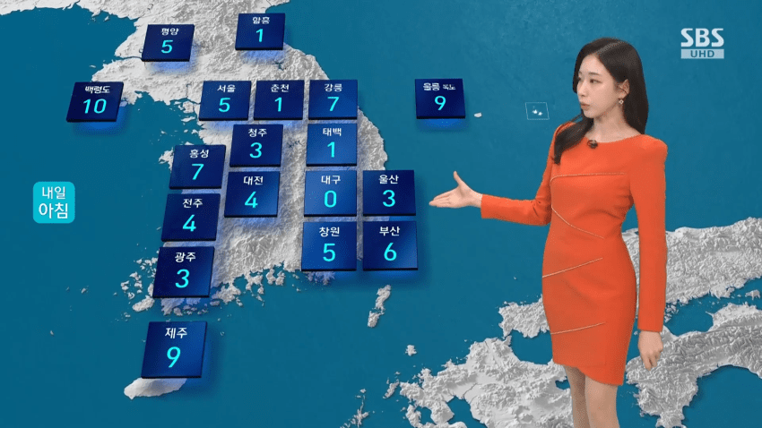
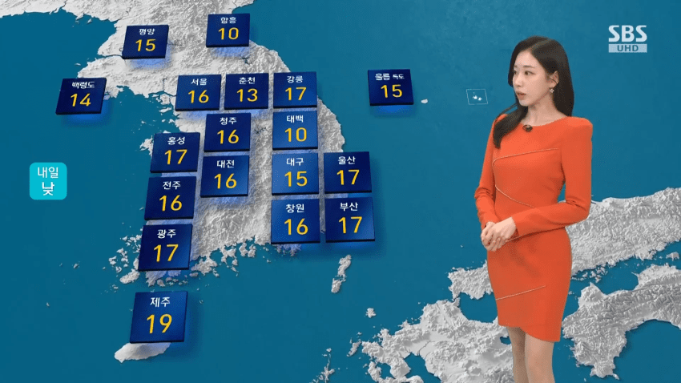
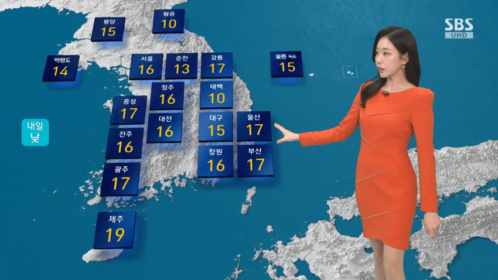
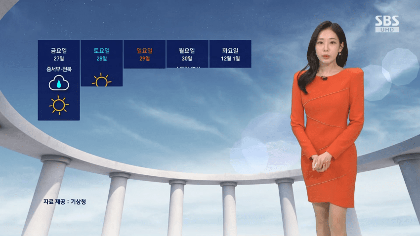
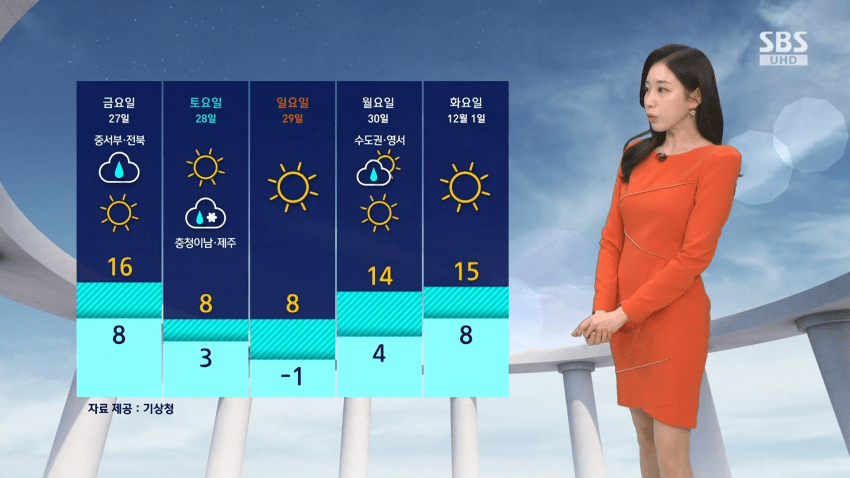
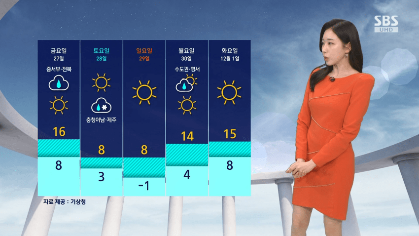
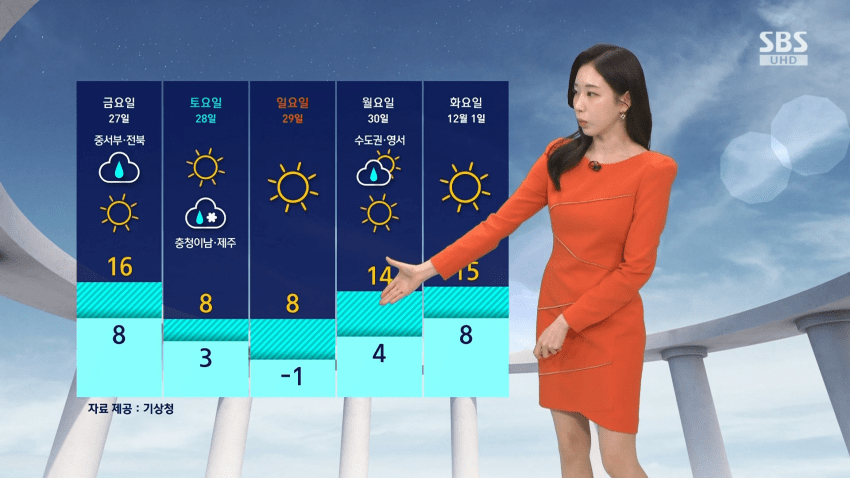
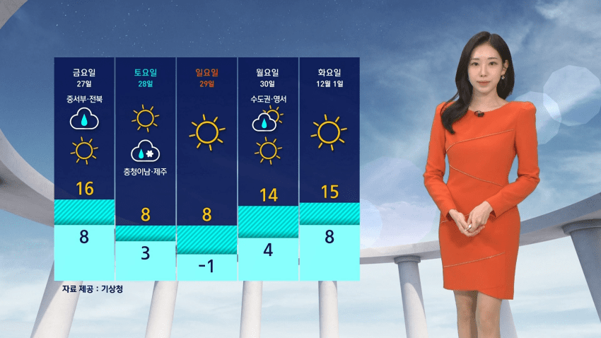
댓글
수집 당시 댓글 27개
기갤러1 · 11.25 23:29:00
ㅇㅇ · 11.26 04:57:51
楚覇王 項羽 · 11.26 10:01:14
봇치쟝 · 11.26 10:01:53
토라만 · 11.26 10:02:23
· ㅇㅇ · 11.26 11:39:02
우서? 마니 나대네
ㅇㅇ · 11.26 10:06:18
ㅇㅇ · 11.26 10:10:57
히이잉 · 11.26 10:11:18
ㅇㅇ · 11.26 10:14:27
ㅅㅂ · 11.26 10:18:12
· ㅇㅇ · 11.26 10:41:27
· TVN · 11.26 16:28:39
ㅇㅇ · 11.26 10:22:00
ㅇㅇ · 11.26 10:38:34
· ㅇㅇ · 11.26 12:36:14
ㅇㅇ · 11.26 10:43:09
네요 · 11.26 11:23:14
네요 · 11.26 11:23:35
네요 · 11.26 11:23:51
히이잉 · 11.26 11:47:24
heyzle · 11.26 11:56:13
TVN · 11.26 16:28:09
ㅇㅇ · 11.26 16:43:00
주소킹 · 11.26 17:48:48
· 주소킹 · 11.26 17:48:54
ㅇㅇ · 11.26 18:11:54